Uvas orgânicas certificadas de forma natural e criteriosa. Um processo artesanal único de
cultivo para alcançar a excelência em fazer vinhos.
O vinho da Bruxa
Experimente o
verdadeiro sabor
da natureza
POR QUE HEX VON WEIN
O vinho da bruxa
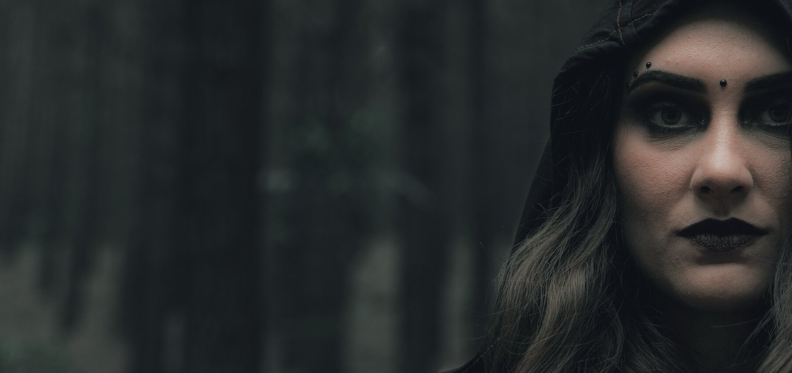
As Bruxas
Elas habitam as florestas há tanto tempo, que as vinhas se enroscam nas árvores. Transformar uvas na bebida dos deuses é vocação e sorte, alquimia e arte. Os saberes ancestrais dessas mulheres foram usados para criar remédios a partir de raízes, flores, frutos e sementes que retiravam da natureza.
As Feiticeiras
Mulheres livres e conhecedoras dos mistérios da Natureza. Desde o início dos tempos lá vivem em harmonia com respeito, reverência e gratidão. Da floresta retiram seu sustento, suas ervas e as uvas para produzir as místicas bebidas responsáveis por sua beleza e eterna juventude.
A vinícola
Hex Von Wein
Foi das florestas da Alemanha que veio nossa inspiração. Os ensinamentos recebidos pelo fundador da vinícola, Ricardo Fritsch, de seu mestre Schleicher R., podem ser resumidos em criar: vinhos mais autênticos e expressivos, inspirados em velhos valores de felicidade e bem-estar e orientados pelo respeito ao elo entre a natureza e o homem. "Fazer bons vinhos, com lucro se possível, com prejuízo se necessário, mas sempre bons vinhos."
Ao longo dos anos temos buscado inspiração na escola da vida para produzir o sabor da uva em seu estado mais precioso. Temos consciência de que este estilo de vinho produzido na Hex von Wein é muito diferente do padrão comercial de mercado. Não ceder à “fórmula tradicional” reflete - antes de mais nada -, em um gosto pessoal específico para vinhos, além de um ideal. Um produto que resgata a autenticidade do solo e a forma de produção dos antigos, em uma perfeita sintonia entre o homem e a natureza.

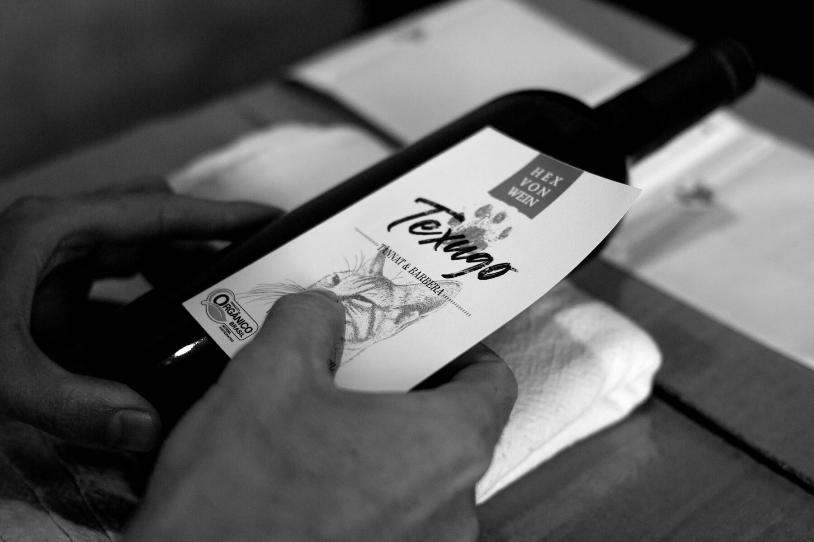
A nossa primeira safra foi em 1994, no porão da nossa casa em Picada Café (RS). Por lá, acontecia a fermentação do vinho. Em 2004, construímos uma pequena cantina em pedra basalto que até hoje guarda nossos produtos em temperaturas estáveis. Foi neste mesmo ano que certificamos a nossa produção orgânica em conformidade com os critérios do Ministério da Agricultura.
um estilo singular
Aprecie o resultado
Vinhos e espumantes orgânicos produzidos a partir da união entre o criador e a criatura, com respeito ao solo e aos seres que lá habitam.
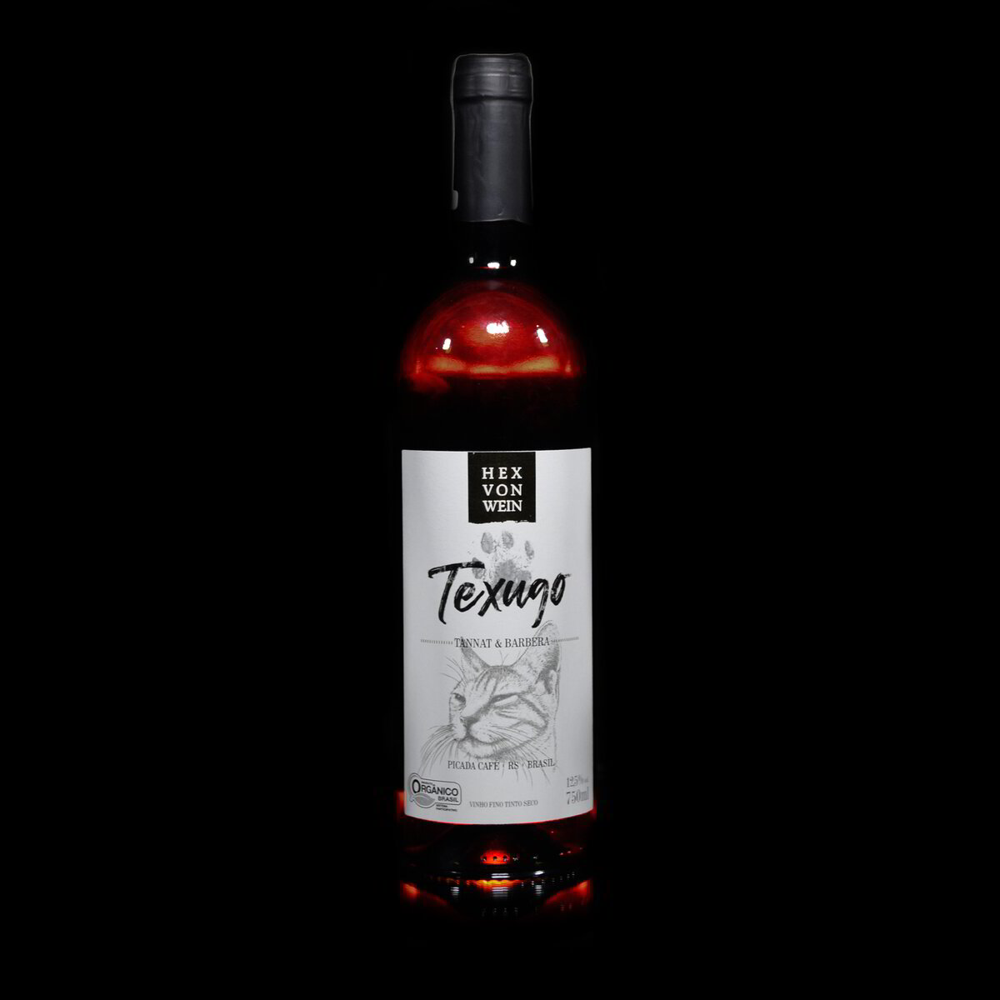
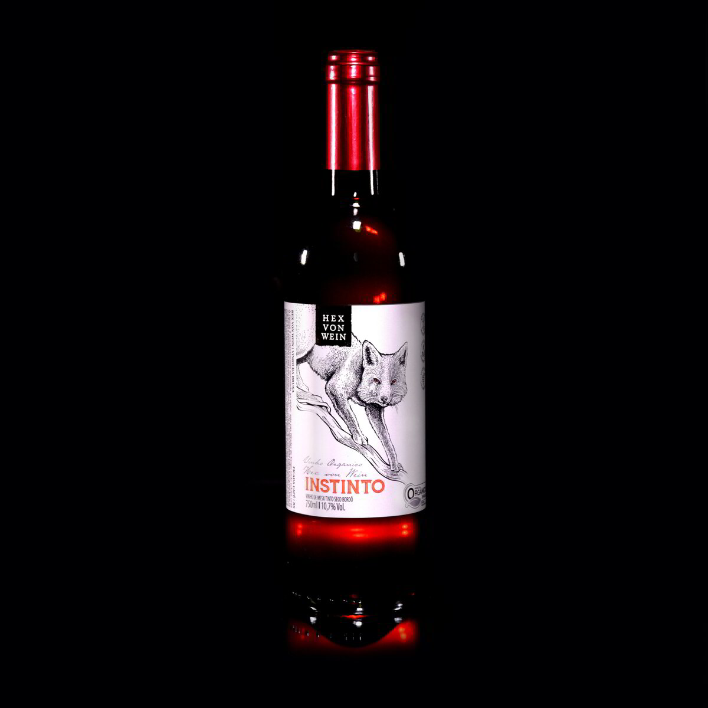
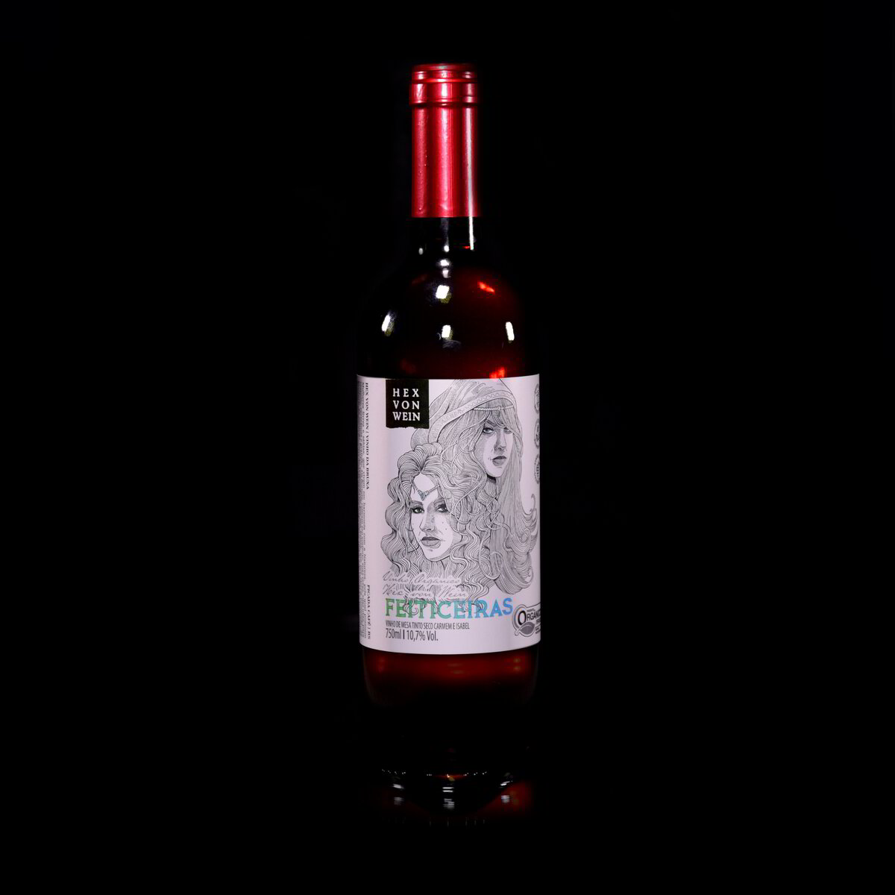

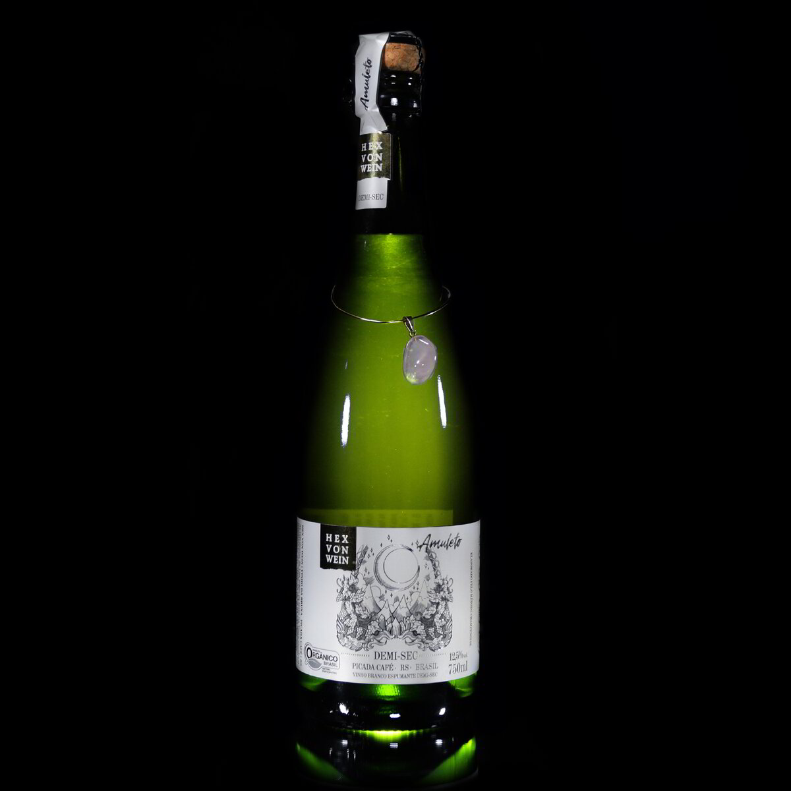
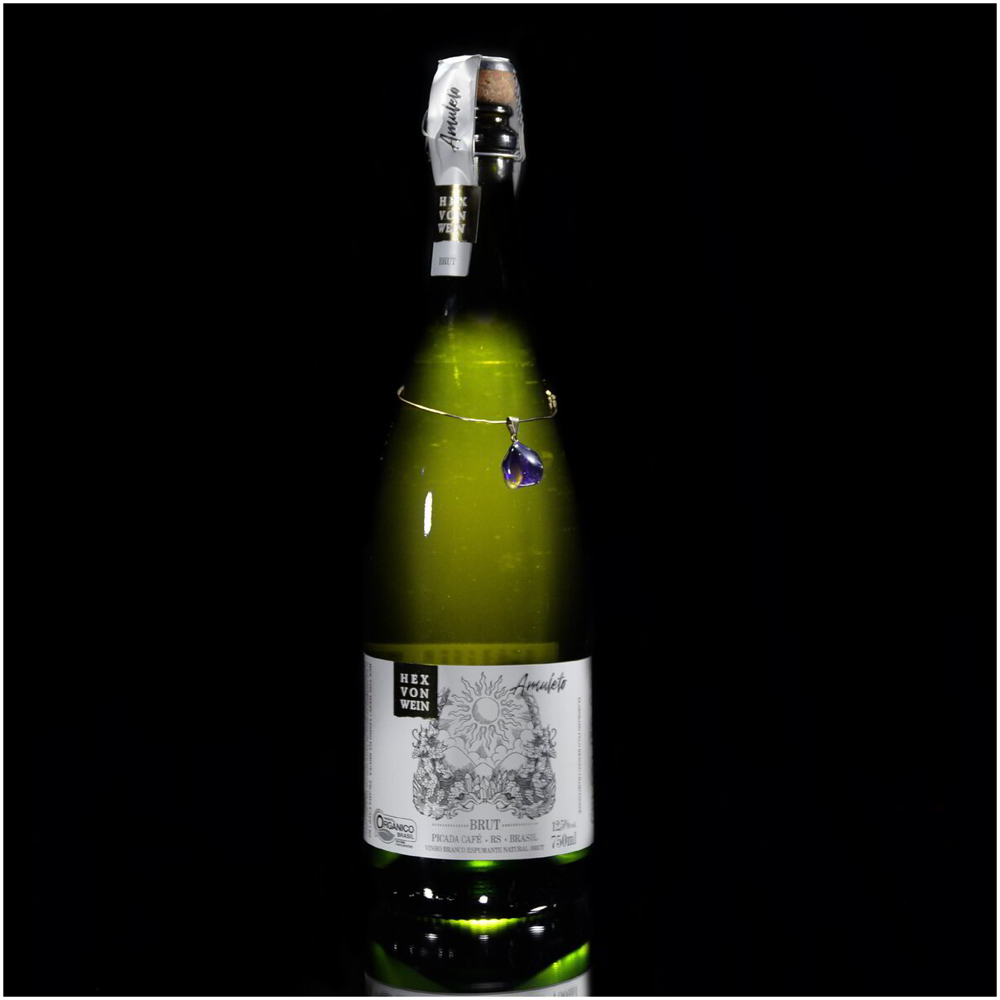
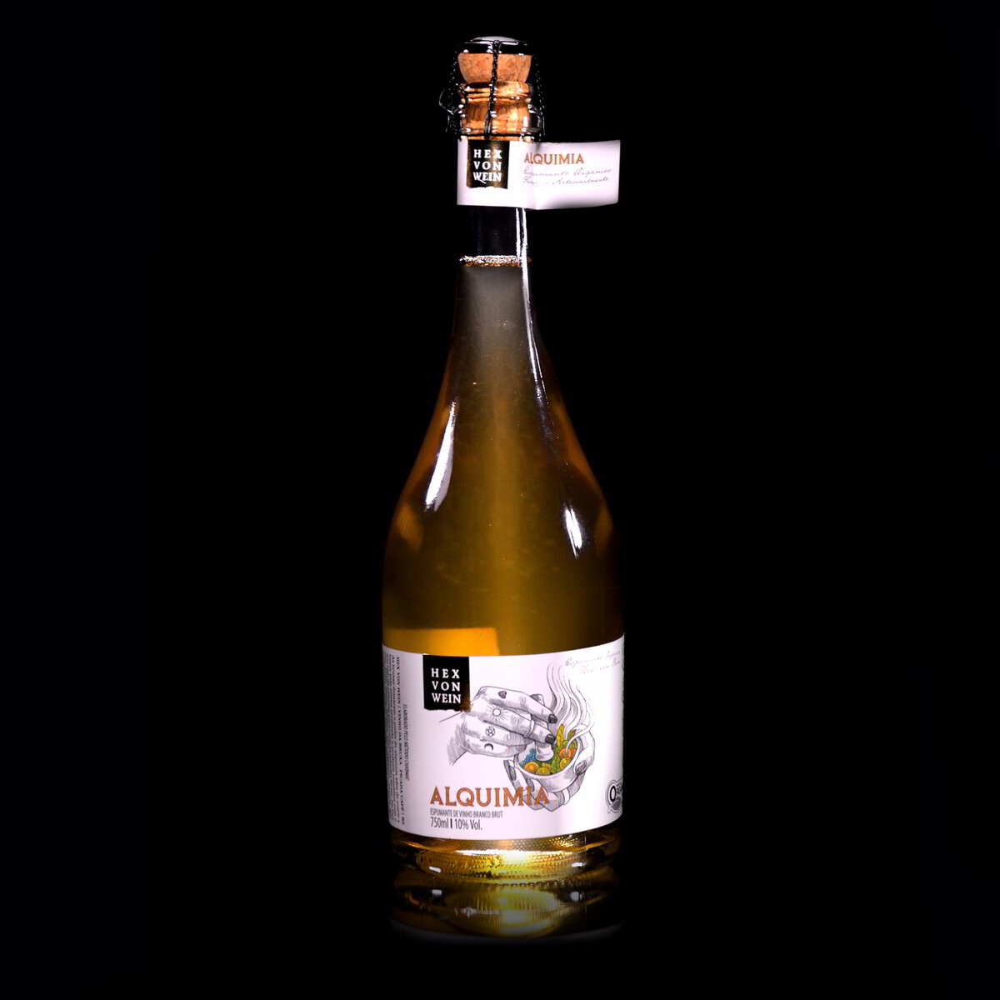
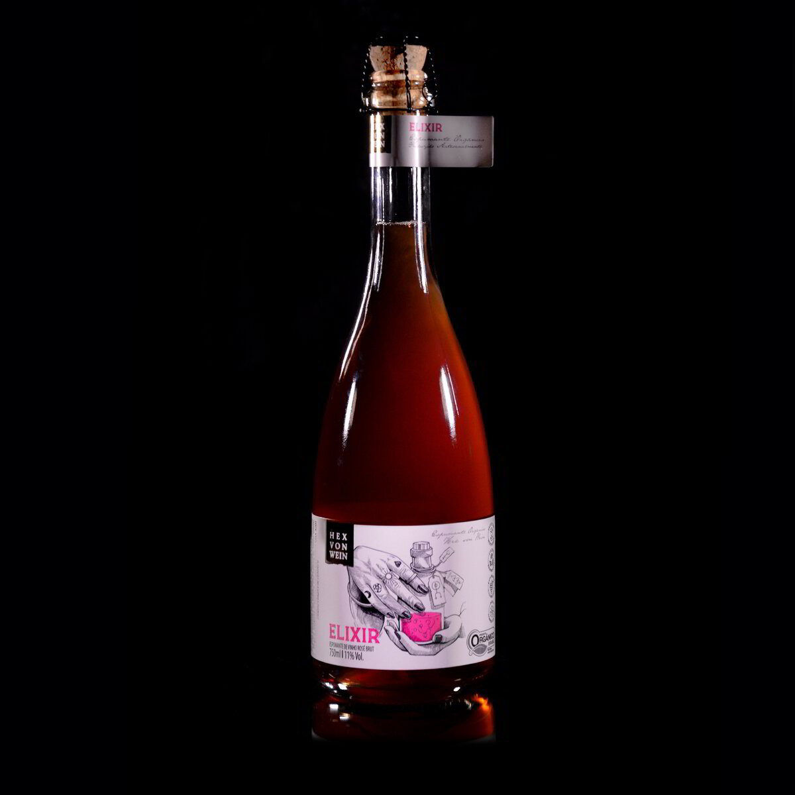
ATENDIEMNTO